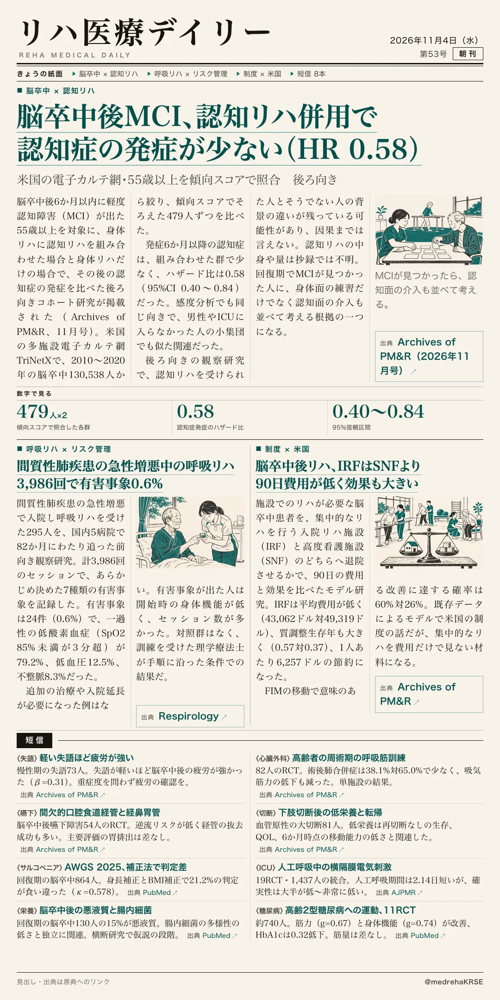
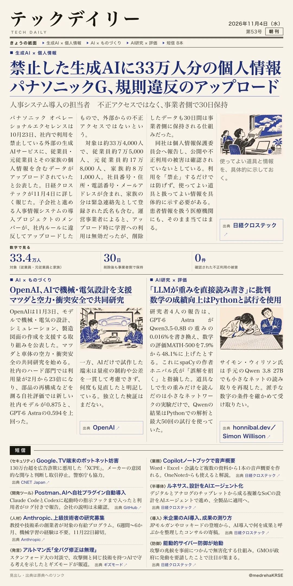

リハ医療デイリー
脳卒中後MCI、認知リハ併用で認知症の発症が少ない（HR 0.58）
米国の電子カルテ網・55歳以上を傾向スコアで照合 後ろ向き
身体リハに認知リハを足した群で、その後の認知症が少なかった。

テックデイリー
禁止した生成AIに33万人分の個人情報 パナソニックG、規則違反のアップロード
人事システム導入の担当者 不正アクセスではなく、事業者側で30日保持
「禁止」だけでは防げなかった。

米国の電子カルテ網・55歳以上を傾向スコアで照合 後ろ向き
身体リハに認知リハを足した群で、その後の認知症が少なかった。

人事システム導入の担当者 不正アクセスではなく、事業者側で30日保持
「禁止」だけでは防げなかった。
